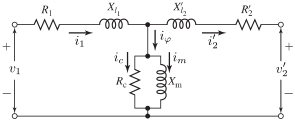
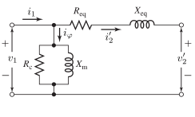

Cantilever Transformer Model
Context
Transformers are essential parts of the grid as two-port devices that change the voltage level from one of its ends to the other. It allows to be able to change the voltage to a suitable level to perform any of the actions necessary for the grid. For example, it is used to raise the voltage to be able to transport electricity minimizing the losses, and then lower the voltage until reaching appropriate levels for consumption without risking the integrity of the users.
Model use, assumptions, validity domain and limitations
The model is developed for the single-phase transformer, considering a non-ideal model with some simplifications that allow to perform the steady-state analysis of transformers. Starting from the T-equivalent model described as a semi-ideal transformer in references [1], [2] and [3], it describes an approximation by grouping the impedance of the primary and secondary windings. In reference [1], it is referred to as cantilever equivalent circuit.
The assumptions are:
- The model assumes linearity with respect to the magnetic circuits, not considering saturation.
- Each winding has a leakage flux associated, which does not contribute to the core flux, and is included only in the total flux passing through the winding in which is generated. The path taken by this flux is mainly through the air, and can be modelled as a linear function of the current associated to the winding.
- The primary winding current is divided in two components, one is the current associated to the magnetomotive force produced to compensate for the demagnetizing force produced by the secondary windings, which can be though of as a load, and the second component is associated to the current necessary to produce the mutual flux.
- In practice, not all the turns of the coils are affected by the leakage flux, and not all the magnetizing flux produced by one winding affects all the turns of the other winding. For that reason, the number of turns of each winding (\(N_i\)) is assumed to be an equivalent number of turns, which differs from the actual number of turns.
- The final equivalent model neglects the voltage drop produced by the exciting current in the secondary leakage impedance.
The model does replicate exactly the theoretical value of the voltage at the secondary winding calculated with full information, as the equivalent impedance is a simplified approach of the losses. Since the leakage reactances are not easily measured in practice, the cantilever model approach is preferred rather than the T-equivalent approach, as there are short-circuit and open-circuit tests that can be used to determine these equivalent values. Nevertheless, the T-equivalent model is described and can be used if the primary and secondary leakage reactances are known. It also reduces the computations needed to perform the analysis.
Steady-state analysis of balanced three-phase transformers can be performed by using this single-phase model in one of the phases and then considering the phase shift for the rest of the phases. Depending on the configuration of the sides of the three-phase transformers (Delta-Delta, Star-Star, Delta-Star, Star-Delta), some rescaling of the impedances may be needed. Chapter 2.7 and Appendix A of [1] discuss the details of this analysis.
It cannot be used to perform transient analysis, as it does not consider the time-dependent behavior of the transformer. It is also not suitable for the analysis of transformers with a high degree of saturation, as it does not consider the non-linear behavior of the magnetic circuit.
Model description
Parts of the transformers
There are two physical parts of the transformers relevant for the model described, as seen in the following schematic representation [3]:
Figure 1: Transformer schematic representation
Windings
Windings are copper coil turns grouped in different bundles. Windings can be primary windings, to which the voltage is applied, or secondary windings, which have an output voltage that is product of the transformation.
They can also be considered high voltage windings or low voltage windings, and both of them can act as primary or secondary depending on the direction of the power. In the generation part of the power system, the primary winding of the transformer will correspond to the low voltage level, since the generation occurs at low voltage, and it has to be raised to a higher level for the transmission grid. In the consumer part of the power system, the primary will be the high voltage level, and the secondary will be the low voltage level.
Core
The core has two primary functions. The more obvious one, it acts as the support of both the primary and secondary windings. The second function is to create a low reluctance path for the magnetic flux. It is typically made of soft iron in order to lower the eddy current losses.
Transformer equations
Variables
|| Variable | details | Unit | || ————–| —— | —– | || \(v^H\) | HV side terminal phase-to-ground voltage phasor | \(pu\) | || \(v^L\) | LV side terminal phase-to-ground voltage phasor | \(pu\) | || \(i^H\) | HV side current phasor | \(pu\) | || \(i^L\) | LV side current phasor | \(pu\) | || \(P^H\) | HV side active power | \(pu\) | || \(P^L\) | LV side active power | \(pu\) | || \(Q^H\) | HV side reactive power | \(pu\) | || \(Q^L\) | LV side reactive power | \(pu\) |
Parameters
|| Parameter | details | Unit | || ————–| —— | —– | || \(N_1\) | Number of turns of the primary winding | unitless | || \(N_2\) | Number of turns of the secondary winding | unitless | || \(a\)| Transformation ratio \(a = \frac{N_1}{N_2}\) | \(pu\) | || \(S_{base}\) | Transformer rated power | \(VA\) | || \(V_{base, L}\) | LV side rated voltage | \(V\) | || \(V_{base, H}\) | HV side rated voltage | \(V\) | || \(I_{base, L}\) | LV side base current \(I_{base} = \frac{S_{base}}{V_{base, L}}\) | \(A\) | || \(I_{base, H}\) | HV side base current \(I_{base} = \frac{S_{base}}{V_{base, H}}\) | \(A\) | || \(Z_{base, L}\) | LV side base impedance \(R_{base} = \frac{V_{base, L}^2}{S_{base}}\) | \(\Omega\) | || \(Z_{base, H}\) | HV side base impedance \(R_{base} = \frac{V_{base, H}^2}{S_{base}}\) | \(\Omega\) | || \(V_{oc}\) | Open-circuit voltage | \(V\) | || \(P_{oc}\) | Open-circuit active power | \(W\) | || \(I_{oc}\) | Open-circuit current | \(A\) | || \(V_{sc}\) | Short-circuit voltage | \(V\) | || \(P_{sc}\) | Short-circuit active power | \(W\) | || \(I_{sc}\) | Short-circuit current | \(A\) | || \(R_{eq}\) | Equivalent resistance \(R_{eq} = R_{sc} = \frac{P_{sc}}{I_{sc}^2}\)| \(\Omega\) | || \(\|Z_{eq}\|\) | Module of the equivalent impedance \(\|Z_{eq}\| = \|Z_{sc}\| = \frac{P_{sc}}{I_{sc}^2}\)| \(\Omega\) | || \(X_{eq}\) | Equivalent reactance \(X_{eq} = X_{sc} = \sqrt(\|Z_{sc}\|^2 - R_{sc}^2)\) | \(\Omega\) | || \(R_{c}\) | Magnetizing resistance \(R_{c} = \frac{V_{oc}^2}{P_{oc}}\)| \(\Omega\) | || \(\|Z_{\varphi}\|\) | Module of the magnetizing impedance \(\|Z_{\varphi}\| = \frac{V_{oc}}{I_{oc}}\) | \(\Omega\) | || \(X_{m}\) | Magnetizing reactance \(X_{m} = \frac{1}{\sqrt(\frac{1}{\|Z_{\varphi}\|^2} - \frac{1}{R_{c}^2})}\) | \(\Omega\) | || \(Z_{eq}\) | Equivalent impedance \(Z_{eq} = R_{eq} + jX_{eq}\)| \(\Omega\) | || \(Y_{\varphi}\) | Magnetizing admittance \(Y_{\varphi} = \frac{1}{R_{c} + jX_{m}}\)| \(\Omega^{-1}\) |
Systems of equations
The system of equations has 6 equations and 8 variables. The user must set a fixed value for two of the variables in order to have a single solution. The complete system in Per-Unit representation is:
\[ \begin{align} v^H &= v^L + Z_{eq}^H i^H\\ i^H &= Y_{\varphi}^L v^L - i^L\\ P^H &= \mathbb{R}(v^H i^{H*})\\ Q^H &= \mathbb{I}(v^H i^{H*})\\ P^L &= \mathbb{R}(v^L i^{L*})\\ Q^L &= \mathbb{I}(v^L i^{L*}) \end{align} \]
where \(\mathbb{R}\) and \(\mathbb{I}\) correspond to the real and imaginary part of the complex power. The admittance can be represented in either Per-Unit system, as long as the transformation to Per-Unit is done according to the computation of their values (i.e. if the equivalent impedance is computed referred to the HV, the Per-Unit system used must use the HV base voltage).
Operational principles
Ideal transformer
An ideal transformer consists on a primary winding and a secondary winding that are magnetically coupled by an iron-core, which is assumed to serve as a lossless path of magnetic flux. The primary winding is connected to an alternating voltage source, which produces an alternating flux the amplitude of which depends on the number of turns of the winding.
As it is ideal, all this flux is considered to be mutual flux that links the primary and secondary, inducing a voltage in the latter the amplitude of which also depends on the number of turns of the secondary winding. The electromotive force induced by the primary circuit is calculated as:
\[e_1 = \frac{d\psi_1}{dt} = N_1 \frac{d\varphi}{dt}\]
where \(N_1\) is the number of turns of the primary circuit, \(\psi_1\) is the linkage flux of the primary winding and \(\varphi\) is the mutual flux that links both windings.
The primary winding magnetic electric equation is:
\[v_1 = R_1 i_1 + e_1\]
Considering an ideal transformer with no magnetic or electrical losses (i.e, \(R=0\)), the terminal voltage equals the induced electromotive force. Regarding the secondary transformer, the induced electromotive force produces a voltage in its terminals:
\[v_2 = e_2 = N_2 \frac{d\varphi}{dt}\]
Since the magnetic flux relates both terminal voltage expressions, the following relationship holds:
\[\frac{v_1}{v_2} = \frac{N_1}{N_2}\]
where \(\frac{N_1}{N_2}\) is also called the transformation ratio. Focusing now on the magnetomotive forces produced, the primary circuit can be considered as a generator and the secondary as a load, yielding the following expression:
\[ \begin{align} N_1 i_1 - N_2 i_2 &= 0\\ \frac{i_1}{i_2} &= \frac{N_2}{N_1} \end{align} \]
and substituting it in the voltage relationship:
\[v_1 i_1 = v_2 i_2\]
showing that the input power equals the output power. This is a result of the several idealizations that have been assumed.
Equivalent-T circuit for non-ideal transformers
The transformer can now be described with the following equivalent circuit, normally referred to as equivalent-T circuit, as an ideal transformer with external impedances that model all the losses:

Figure 2: T-equivalent circuit of a transformer
The transformer has been omitted, and it can be thought as if it was at the right-most or the left-most part of the equivalent circuit, depending on the reference winding chosen.
Considering this non-ideal transformer, the relationship between currents and voltages for the windings can be written as follows:
\[ \begin{align} v_1 &= R_1 i_1 + \frac{d\Psi_1}{dt} \\ v_2 &= R_2 i_2 + \frac{d\Psi_2}{dt} \end{align} \]
where \(R_i\) is the winding resistance in \(\Omega\), \(v_i\) is the terminal voltage in \(V\), \(i_i\) is the winding current in \(A\) and \(\Psi_i\) is the magnetic flux linkages in \(Wb\). The subindex \(1\) refers to the primary winding of the transformer, while the subindex \(2\) refers to the secondary winding.
Since there can be some losses in the magnetic circuit, the total linkage flux is split into mutual flux, which is the flux confined in the iron-core and produced by the magnetomotive forces of both windings, and the leakage flux, which links only the winding at which is generated.
From the point of view of the primary circuit, the leakage flux induces a voltage in the primary winding that adds to the voltage induced by the mutual flux, and it is considered proportional to the current the primary current \(i_1\). It is represented by the primary leakage inductance \(L_{l_1}\) and its corresponding reactance \(X_{l_1} = 2\pi f L_{l_1}\), with \(f\) the frequency of the current in \(Hz\).
Regarding the magnetic circuit, the primary current must produce the magnetomotive force to counteract the magnetomotive force produced by the secondary winding, which can be regarded as the demagnetizing winding, and in addition to that it has to produce the resultant mutual flux. The current components that produce each magnetomotive force are defined as the load component \(i_{2'}\) and the exciting component \(i_\varphi\). The following equation represents the magnetomotive forces balance:
\[N_1 i_{\varphi} = N_1 i_1 - N_2 i_2 = N_1 (i_{\varphi} + i_{2'}) - N_2 i_2\]
from where it can be extracted that \(i_{2'} = \frac{N_2}{N_1} i_2\), which would be the ideal transformer relationship between the primary and secondary current with \(i_2' = i_1\). \(N_1\) and \(N_2\) correspond to the equivalent number of turns for the primary and secondary windings respectively.
The exciting current is split into a core-loss component \(i_c\) in phase with the electromotive force produced by the primary circuit, and a magnetizing component \(i_m\) lagging the electromotive force by 90º. These two components can be represented by the means of a core-loss resistance \(R_c\) and a magnetizing inductance \(L_m\), which can be represented as a reactance as \(X_m = 2\pi f L_m\).
In the equivalent circuit shown in Figure 2, the reference winding is the primary, and all the secondary quantities (those with a \('\) on top) are referred from the primary. To recover the actual value of these secondary quantities, the following transformation can be applied as done with the current earlier:
\[ \begin{align} X_{l_2}' &= (\frac{N_1}{N_2})^2 X_{l_2} \\ R_{2}' &= (\frac{N_1}{N_2})^2 R_{2} \\ v_{2}' &= \frac{N_1}{N_2}v_{2} \end{align} \]
Cantilever equivalent circuit
The equivalent-T circuit can be simplified by moving the shunt impedance to before the primary resistance and reactance, which enables the representation of both windings’ impedance as a unified equivalent impedance. The error induced by displacing the shunt impedance is small, since it is only disregarding the voltage drop caused by the exciting current when passing through the primary impedance, and this current is much smaller than the primary current. The resulting equivalent circuit is called the cantilever equivalent circuit, which in this case is referred from the primary circuit, meaning that the secondary circuit quantities have to be rescaled using the transformation ratio. The following figure represents this equivalent circuit:

Figure 3: Cantilever equivalent circuit of a transformer
where \(R_{eq} = R_1 + R_2'\) and \(X_{eq} = X_{l_1} + X_{l_2}'\). All the parameters of this equivalent model can be obtained after performing an open-circuit and a short-circuit test.
Short-circuit test
This test is used to find the equivalent series impedance \(R_{eq} + jX_{eq}\). It considers a short-circuit in the secondary terminals of the T-equivalent circuit, and assumes that the iron-core is not saturated.
The short-circuit impedance from the primary side is:
\[Z_{sc} = R_1 + jX_{l_1} + \frac{Z_{\varphi} R_2' + jX_{l_2}'}{Z_{\varphi} + R_2' + jX_{l_2}'} \approx R_1 + jX_{l_1} + R_2' + jX_{l_2}' = R_{eq} + jX_{eq}\]
where the approximation is done considering the impedance of the exciting branch is much larger than that of the secondary.
When doing the test, the measurements that are necessary to compute the equivalent impedance are the RMS magnitude of the applied voltage \(V_{sc}\), the short-circuit current \(I_{sc}\) and the power \(P_{sc}\). Using these measurements, the values for the impedance components are:
\[ \begin{align} |Z_{eq}| &= |Z_{sc}| = \frac{V_{sc}}{I_{sc}} \\ R_{eq} &= R_{sc} = \frac{P_{sc}}{I_{sc}^2} \\ X_{eq} &= X_{sc} = \sqrt(|Z_{sc}|^2 - R_{sc}^2) \end{align} \]
Open-circuit test
To calculate the magnetizing impedance, the test performed is the open-circuit test, which is performed by opening the secondary circuit and applying a voltage in the primary circuit, which generates an exciting current. It is performed at the rated voltages, which ensures that the exciting current is of a few percent of the rated current of the transformer.
The open-circuit impedance from the primary side is:
\[Z_{oc} = R_1 + jX_{l_1} + Z_{\varphi} = R_1 + jX_{l_1} + \frac{R_c(jX_m)}{R_c + jX_m} \approx \frac{R_c(jX_m)}{R_c + jX_m}\]
which assumes that the magnetizing impedance is much larger than the primary impedance.
With the measurements of the voltage applied \(V_{oc}\), the open-circuit current \(I_{oc}\) and the power \(P_{oc}\), the magnetizing impedance terms can be calculated as:
\[ \begin{align} |Z_{\varphi}| &= \frac{V_{oc}}{I_{oc}} \\ R_{c} &= \frac{V_{oc}^2}{P_{oc}} \\ X_{m} &= \frac{1}{\sqrt((\frac{1}{|Z_{\varphi}|})^2 - (\frac{1}{R_c})^2)} \end{align} \]
Per-Unit system
The equivalent circuit will be expressed in Per-Unit system, converting the transformer turn ratios in 1:1. This allows the removal of the ideal transformer of the model and hence the need to express the quantities referring to the primary or the secondary. This system is determined by setting arbitrary values for two quantities, typically \(S_{base}\) and \(V_{base}\), and then determining the rest of the base quantities using the relationships:
\[ \begin{align} S_{base} (P_{base}, Q_{base}) &= V_{base} I_{base} \\ Z_{base} (R_{base}, X_{base}) &= \frac{V_{base}}{I_{base}} \end{align} \]
The \(V_{base}\) value will change for each side of the transformer according to the transformation ratio.
Open source implementations
This model has been successfully implemented in:
|| Software | URL | Language | Open-Source License | Last consulted date | Comments | || Dynawo | Link | Modelica | MPL v2.0 |02/05/2024 | no comments |